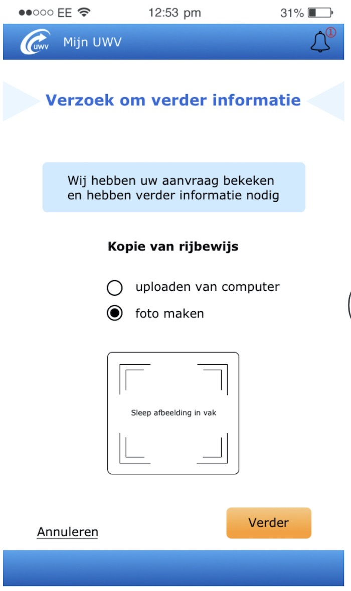

GRAFISCH
UWV
Tijdens mijn stage voor het UWV heb ik verschillende grafische werken gedaan. Bij deze stage werkte ik binnen het UX & Visual Design Team. Ik heb verschillende posters, infographics, app designs en interne dashboards ontworpen en gemaakt. Tijdens deze stage heb ik de Adobe programma's nog beter leren kennen en heb ik veel kunnen ontdekken.
Serie van een Serie
Ik heb een reeks posters gemaakt in opdracht, van de serie Pretty Little Liars.
De thema's die aan bod komen in de serie heb ik terug laten komen in het design.
Deze posters zijn gemaakt in Photoshop en InDesign.
Posters
Tijdens mijn studie moet ik veel onderbouwingen geven voor mijn ontwerpkeuzes.
Ik lever altijd een groot en verzorgd verslag in, met het hele ontwerpproces.
Op basis van de poster die bij het proces hoort, geef ik een presentatie.
Ze zijn allemaal vormgegeven in Illustrator en InDesign.
Overige
Tijdens met studie heb ik veel verschillende opdrachten gekregen en gemaakt.
Dit zijn wat verschillende grafische werken die ik gemaakt heb.
Ze zijn allemaal vormgegeven in Illustrator, Photoshop of InDesign.